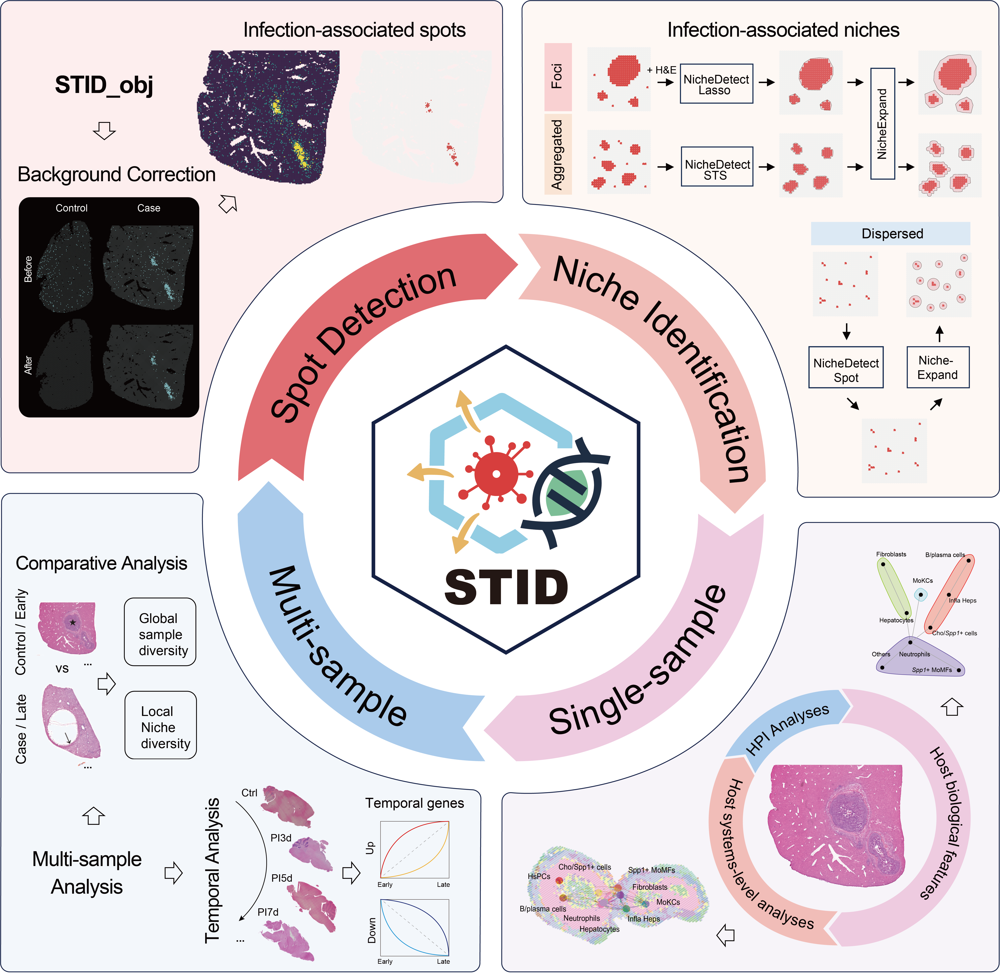

Overview
Spatial transcriptomic studies of infectious diseases still rely on fragmented data analysis processes. Here, we developed STID, a standardized framework for spatial transcriptomic analysis of infectious diseases, that leverages the Seurat ecosystem and incorporates Python based modules. STID provides an extensible infection-specific data structure and supports a full suite of analyses, such as pathogen background correction, infection-associated spot and niche identification, single-sample niche characterization, and multi-sample comparative and temporal analyses. Moreover, STID is broadly applicable to spatial transcriptomic data from infectious diseases caused by bacteria, viruses, and parasites, and enables systematic characterization of the structural features, cellular composition, molecular functions, and host–pathogen interactions within pathogen infected and/or host responsive niches. Overall, STID provides an accessible, reproducible, and extensible framework for analyzing infection-associated spatial transcriptomic data and for dissecting host–pathogen interactions in their native spatial microenvironments.

Graphical abstract
Key Features
- STID provides a convenient, efficient, and reproducible standardized framework for spatial transcriptomic analysis of infectious diseases
- STID constructs an infection-specific data structure
- STID enables accurate identification and characterization of pathogen-infected and host-responsive niches
- STID supports comparative and temporal analyses of multi-sample spatial transcriptomic data
Key Functionalities
| Function Category | Supported Methods |
|---|---|
| Data conversion |
h5ad2rds, rds2h5ad
|
| Preprocessing |
Seurat_pipeline, anno_SingleR
|
| Background correction | CorrectBackground |
| Spot detection |
SpotDetect_Gene, SpotDetect_Geneset
|
| Niche identification |
NicheDetect_Lasso, NicheDetect_STS, etc. |
| Single-Sample analysis |
CalSampComp, CalSampDEGs, etc. |
| Multi-Sample analysis |
CalSampPathoTrack, CalSampGeneTrend, etc. |
Installation
Configure
- mirrors
To ensure stable and fast installation, users may configure CRAN and Bioconductor mirrors depending on their location.
# Recommended for users in China
options("repos" = c(CRAN="https://mirrors.tuna.tsinghua.edu.cn/CRAN/"))
options(BioC_mirror="https://mirrors.tuna.tsinghua.edu.cn/bioconductor")
# Recommended for users outside China
options("repos" = c(CRAN="https://cloud.r-project.org"))
options(BioC_mirror = "https://bioconductor.org")- library path
Given the number of dependencies, it is strongly recommended to use an isolated library path.
This prevents conflicts with existing R environments and improves reproducibility.
dir.create("./library_STID/", showWarnings = FALSE)
.libPaths("./library_STID/") # modify as needed
.libPaths()- additional configuration
# Increase download timeout to avoid failures caused by unstable network connections
options(timeout = 300)
# Enable parallel compilation to accelerate package installation
ncores <- max(1, parallel::detectCores() - 2)
Sys.setenv(MAKEFLAGS = paste0("-j", ncores))
# Optimize compilation flags (reduce debug info and improve performance)
Sys.setenv(
PKG_CFLAGS = "-O2 -g0 -DNDEBUG",
PKG_CXXFLAGS = "-O2 -g0 -DNDEBUG"
)Pre-installation requirements
If your R version >= 4.5, you can skip the Pre-installation step. Otherwise, it is strongly recommended that you perform the Pre-installation; otherwise, the installation process will become difficult, as many dependent packages need to be compiled and installed.
Installation from source is recommended.
# Core infrastructure package
install.packages("rlang") # >= 1.1.7
# These packages require network access (e.g., GitHub or external sources).
# Installation failures (e.g., "Error in download.file") are often caused by network issues.
# Retry installation or consider using a proxy/VPN if necessary.
# Note: this is not a complete list, but these are the most failure-prone packages.
install.packages("openssl") # >= 2.3.5
install.packages("curl") # >= 7.0.0
install.packages("systemfonts")
# These packages are recommended to be installed as binary versions
# to avoid compilation errors and reduce installation time
install.packages("Matrix", type = "binary") # >= 1.6.5
install.packages("RcppArmadillo", type = "binary")
install.packages("uwot", type = "binary")
install.packages("units", type = "binary")
install.packages("ggforce", type = "binary")Install STID
If installation fails, we recommend re-running the installation command multiple times and using the dependency checking utility to identify missing packages. Problematic packages should then be installed individually until all dependencies are successfully resolved.
When prompted to update packages, select “3: None” to avoid overwriting previously installed versions (e.g., Matrix). Installation from source is recommended.
if (!requireNamespace("remotes", quietly = TRUE)) {
install.packages("remotes")
}
remotes::install_github("YulongQin/STID")If the installation fails, please refer to the installation tutorial for manual dependency setup
Quick Start
You can click here to access the quick start tutorial, which provides a concise overview of the main functions and workflow of STID.
For more detailed step-by-step instructions, please refer to the following tutorials:
Resources
Project
- GitHub repository: The source code for STID is available on GitHub.
Tutorials
- Online tutorial: Documentation and tutorials for STID are available at the tutorial website.
Data availability
-
Gene_Geneset
A dataset containing gene and gene set information, available in the R package.
-
Raw and processed data
The raw and processed datasets used in the article and tutorials are available from the Figshare repository. Some datasets are unavailable or only partially available due to restrictions imposed by the original authors. Please contact the original authors for data access requests.
Code availability
- The version used in this study has been archived on Zenodo.
- All analysis scripts required to reproduce the results presented in the article are available at the article_code directory.
Citation
If you use STID in your research, please cite:
Qin, Y., Peng, Y., Chen, Q., Chen, J., Ren, P., Deng, H., Wang, D., Liu, X., Ou, Z., Deng, Z., et al. STID: A Standardized Spatial Transcriptomic Analysis Framework for Infectious Diseases. bioRxiv (2026), 2026.05.24.727492. https://doi.org/10.64898/2026.05.24.727492